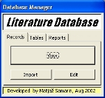
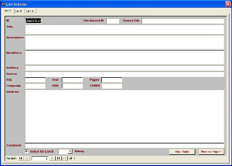

Baze podatkov
Programsko orodje za evidentiranje in hitro pregledovanje zadetkov, dobljenih iz baz COMPENDEX in INSPEC
| NAROÈNIK: | Center za eksperimentalno mehaniko (CEM). | |
| OPIS: | Programsko orodje omogoèa evidentiranje in hitro pregledovanje zadetkov pregleda literature, izvedenega na osnovi baz podatkov COMPENDEX in INSPEC. Zasnovano je na programskem paketu MS-Access in Visual Basic. Kot konèni rezultat orodje kreira samostojno bazo podatkov, ki vkljuèuje vse vnešene zadetke. Zadetke je mogoèe hitro pregledovati v tabelarièni obliki ter iz njih kreirati podsezname pregleda literature tipa A, B in C. Sezname je možno iztiskati v obliki poroèila in jih izvoziti v druge programe. | |
| PROG. DATOTEKA: | Pregled Literature-final.mdb | |
| STROJNA OPREMA: | Osebni raèunalnik PC X86 | |
| PROGRAMSKI JEZIK: | Visual Basic, Access | |
| OPERACIJSKI SISTEM: | Windows 95/98/NT/ME/2000/XP | |
| LETO IZDELAVE: | 2002 | |
  |